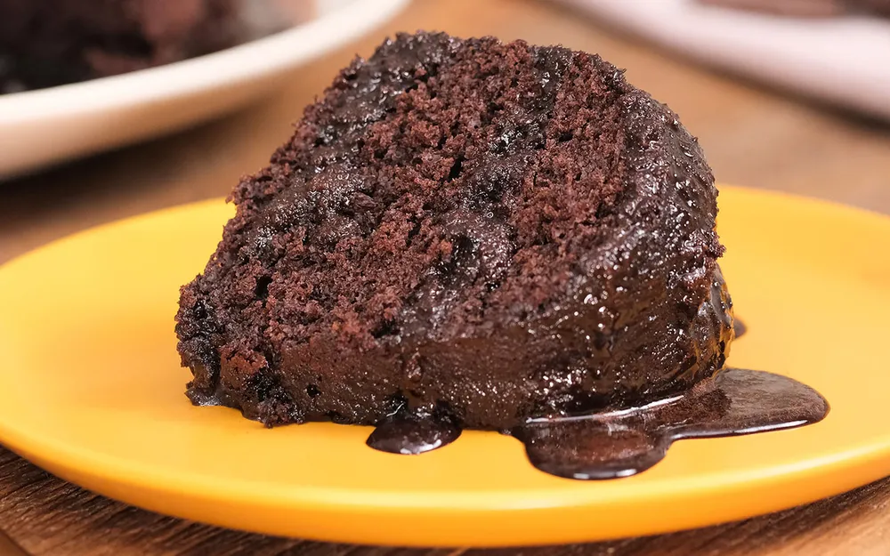

Receita de bolo de chocolate fácil
- fácil
- 1h
- 8 porções
O bolo de chocolate é um queridinho dos brasileiros. Esta receita é fácil, simples e combina com um cafezinho no lanche da tarde. Para preparar a massa do bolo, você vai precisar de chocolate em pó, farinha de trigo, açúcar, ovos, fermento em pó e óleo.
O bolo de chocolate fácil é finalizado com uma cobertura que deixa o bolo bastante molhadinho e saboroso. Saiba como preparar a receita!
Ingredientes
Massa
- 3 ovos
- 1 e meia xícara de chá de açúcar
- Meia xícara de chá de óleo
- 1 xícara de chá de chocolate em pó
- 2 xícaras de chá de farinha de trigo
- 1 xícara de chá de água quente
- 1 colher de sopa de fermento em pó
Modo de preparo
Massa
- Em uma tigela, coloque 3 ovos, 1 e meia xícara de chá de açúcar, meia xícara de chá de óleo, 1 xícara de chá de chocolate em pó e 2 xícaras de chá de farinha de trigo. Misture delicadamente os ingredientes.
- Em seguida, adicione 1 xícara de chá de água quente, 1 colher de sopa de fermento em pó e bata até ficar homogêneo.
- Transfira a massa para uma forma untada e enfarinhada com uma mistura de farinha de trigo e chocolate em pó. Leve para assar em forno preaquecido a 180 graus Celsius por 40 minutos.
Ingredientes
Cobertura
- 1 e meia xícara de chá de leite
- Meia xícara de chá de chocolate em pó
- 1 colher de sopa de manteiga
- 1 xícara de chá de açúcar
Ingredientes
Cobertura
- Em uma panela, coloque 1 e meia xícara de chá de leite, meia xícara de chá de chocolate em pó, 1 colher de sopa de manteiga e 1 xícara de chá de açúcar. Misture, ligue o fogo e deixe ferver.
- Despeje a calda no bolo ainda quente e sirva em seguida.
Quer dar uma incrementada no bolo de chocolate? Aproveite e confira a receita de bolo de chocolate com calda de ganache. O bolo de chocolate com rum e bolo de chocolate com calda de brigadeiro também são sugestões simples e fáceis.